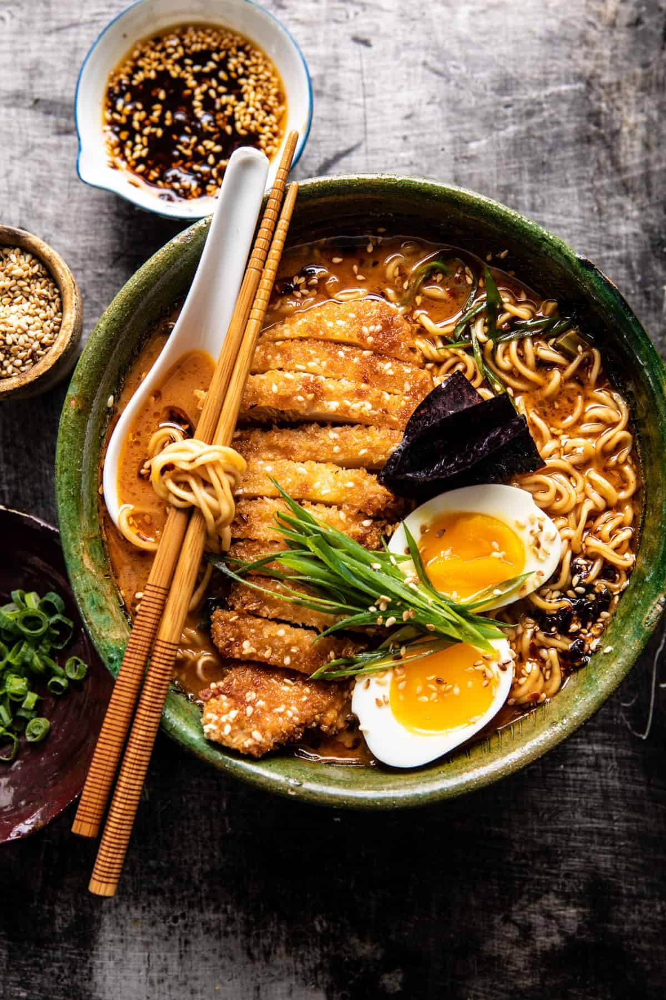

Miso Chicken Katsu Ramen

30 Minute Spicy Miso Chicken Katsu Ramen
This quick and easy 30 Minute Spicy Miso Chicken Katsu Ramen is for those
nights when you’re craving your favorite bowl of Ramen, but need it fast
and made at home. All cooked in one pot, using healthy, pantry staple
ingredients.
Ingredients
- 2 strips thick-cut bacon, chopped
- 6 cloves garlic, finely chopped or grated
- 2 medium shallots, finely chopped
- 1 inch fresh ginger, thinly sliced
- 4 cups baby spinach, chopped
- 1/4 cup low sodium soy sauce
- 3/4 cup coconut milk (or preferred milk)
- 8 cups low sodium chicken broth
Steps
-
Heat a large Dutch oven over medium-high heat. Add the bacon and cook
until crisp, about 5 minutes. Add the garlic, shallots, ginger, and red
pepper flakes. Cook, stirring occasionally, until caramelized, about 3
minutes. Pour in the broth, milk, and soy sauce, then whisk in the miso
and chili paste. Reduce the heat to medium-low and simmer 10 minutes.
-
Meanwhile, make the Katsu. Place the Panko and sesame seeds in a shallow
bowl. Season with salt. Dredge both sides of the chicken through the
Panko, pressing to adhere by using your fist to really pound the crumbs
in. Place the chicken on a plate.
-
Heat a few tablespoons of oil in a large skillet over medium-high. Add
the chicken and cook until golden brown, 3-4 minutes. Flip the chicken
and cook until golden brown on the other side, about 3-4 minutes.
Transfer to a cutting board and season with salt. Slice into thin
strips.
-
To the soup, stir in the noodles, spinach, and sesame oil. Let sit 5
minutes or until the noodles are soft.
-
To serve, divide the noodles between bowls and ladle over the soup back
overtop. Add the chicken. Top as desired with eggs, green onions, sesame
seeds, and chili oil. Serve immediately.